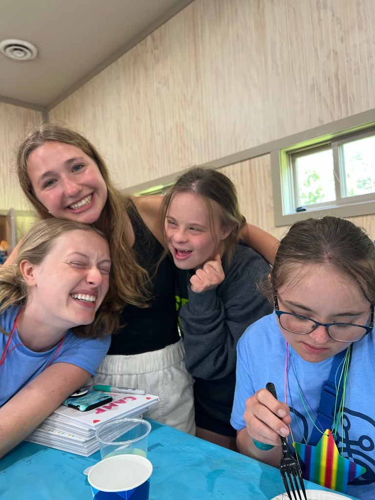
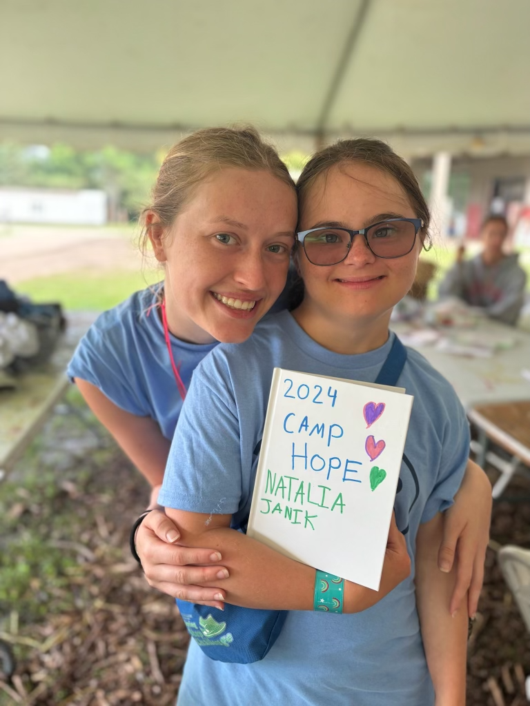
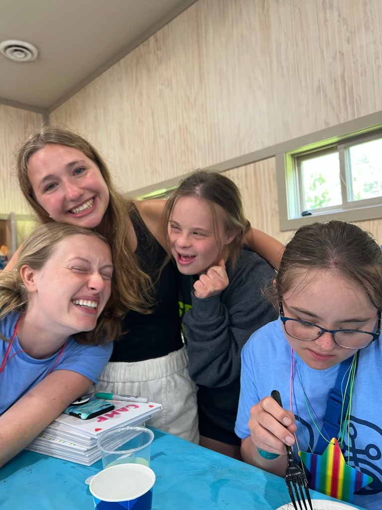
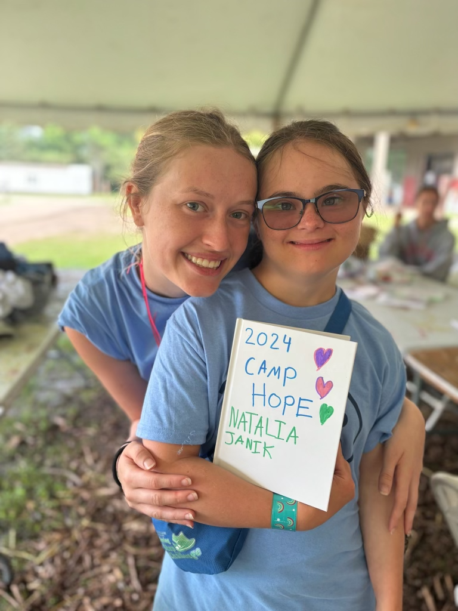

Over the last few years, I have been able to participate in several extracurricular activities that have complimented by academic background.
Since 2022, I have been part of an organization called Camp Hope that organizes activities for young adults with mental and physical disabilities. Below, you will find pictures of the work we do at Camp Hope.
 



I have also been training for a 10K. This summer, I was able to participate in a 5K run in Chicago called "The Big Ten Run." Training for my next race has been quite the challenge, but it has also taught me so much about resilience, drive and perseverance.


My experiences at Camp Hope and my experiences in training for a 10K race have helped me develop skills that are relevant both in journalism and in medicine. Learning to help others while developing empathy have helped me better connect with my sources during interviews and patients during consultations. I hope to continue working on these personal projects seen as they have helped me become a better journalist, student and person.